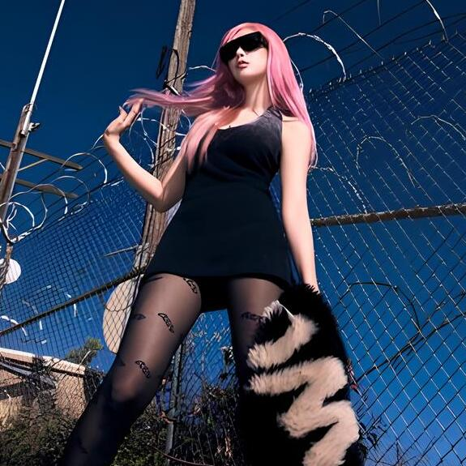
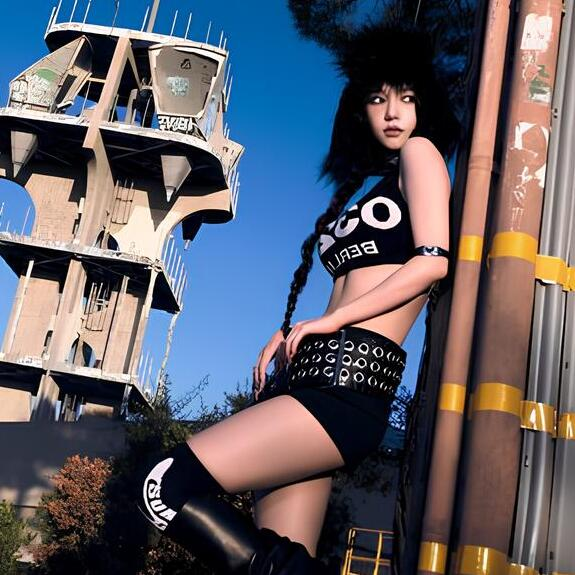

-
Giselle
Uma combatente ágil e versátil, capaz de atacar rapidamente e mudar o ritmo da batalha. Seus raps podem hipnotizar os inimigos ou fortalecer seus aliados.
ATK/ 8000 DEF/ 7000 -
Winter
Uma maga poderosa que controla o gelo. Seus ataques podem congelar os inimigos e criar barreiras de gelo para proteger seus aliados.
ATK/ 6000 DEF/ 7000 -
Karina
Uma guerreira poderosa com ataques corpo a corpo devastadores. Possui habilidades para liderar e inspirar seus aliados, além de poder canalizar a energia ae para aumentar sua força.
ATK/ 7000 DEF/ 6500 -
Ningning
Uma jovem maga com uma voz celestial e um coração puro. Seus poderes luminosos a permitem manipular a luz para atacar, curar e defender.
ATK/ 6000 DEF/ 7000